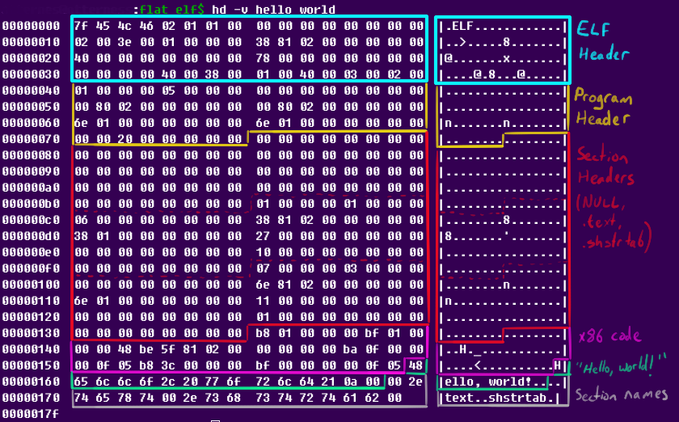

TryHackMe
Blog
Recon, exploiting a vulnerable web app, and working up to root on the Blog box.
TryHackMe
LazyAdmin
Enumerating a vulnerable CMS, landing a shell, and escalating to root.
TryHackMe
PS Empire
Windows enumeration, exploitation, and post-exploitation with PowerShell Empire.

TryHackMe
Reversing ELF
Cracking a series of Linux ELF binaries with file, strings, and dynamic analysis.
TryHackMe
Blue
Exploiting EternalBlue (MS17-010) on a Windows 7 host with Metasploit, then escalating to SYSTEM.